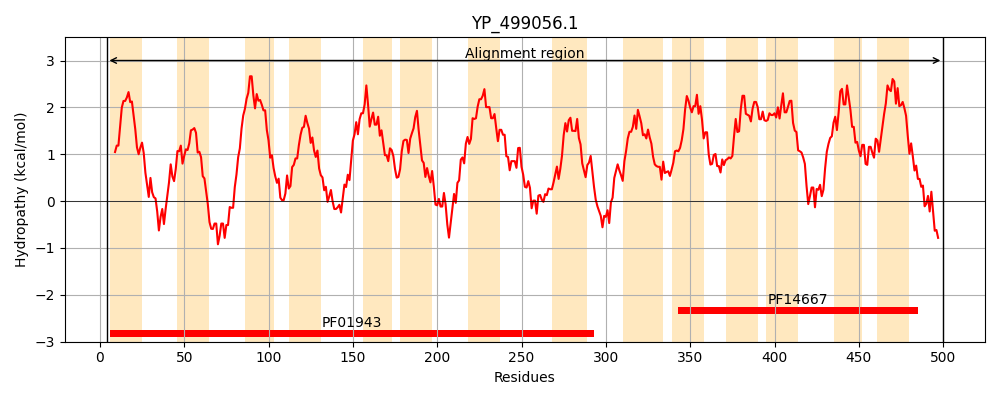
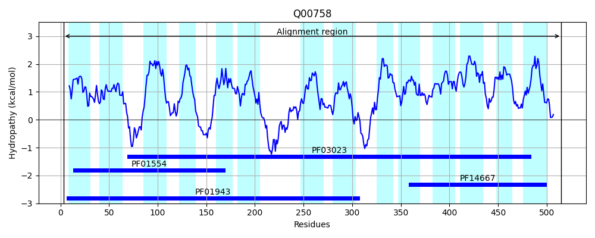
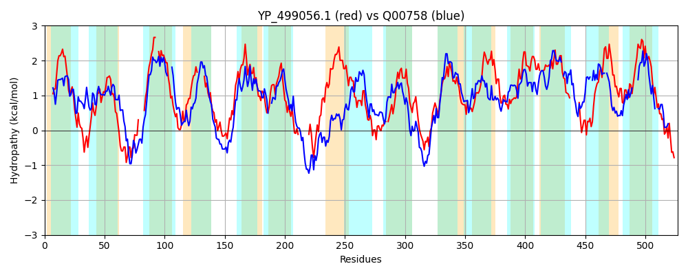

Hit Accession: Q00758
Hit TCID: 2.A.66.2.14
Hit Description: gnl|BL_ORD_ID|11982 gnl|TC-DB|Q00758|2.A.66.2.14 Stage V sporulation protein B OS=Bacillus subtilis GN=spoVB PE=2 SV=1
Mach Len: 527
e:0.000000
Query TMS Count : 14
Hit TMS Count: 14
TMS-Overlap Score: 8.600000
Predicted Substrates:CHEBI:25053;lipooligosaccharide
BLAST Alignment:
Score: 237 , Bit scores: 95 bits, E-value: 4.2e-21, Alignment length: 527, Percentage identity: 23
Query: 4 KEAF-NGVVVLTAALIVIKILSAVYRIPYQNILGDTGLYAYQQVYPIVALGMILSMNAIPSAITQNIGKYHSDEAYAKA----VAYIQLVGIL--LFIAIFVFANNIAHMMGDGHLTPMIQAASLSFI-----FIGMLGVLRGYYQSANNMTVPAISQVIEQVIRVGIIIVTIVIFVDRGWTIYEAGTIAILASTIGFLGSSIYLVAHRPFK--------FKMVNNTAKIVWKQFALSVLIFAISQLIVILWQVIDSVTIIKSLQAIRVPFDVAITEKGVYDRGA-SFIQMGLIVTTTFSFALIPLLSDAIKMNNQVLMNRYANASLKITILISTAAGIGLINLLPLMNGVFFKTNDLTLTLSVYMITVICVSLIMMDMALLQAQHAVRPIFVGMTAGLVIKFILNIILIRLS--GIIGASISTVVSLIIFGTIIHIA-------VTRKYHLYAMRRFFINVVLGMVFMSIVVQCVLNIVTTHGRITGLIELLCAAVLGIIALFFYIFRFNVLTYKELTYLPFGSKL 500
K+ F G ++L AA +V ++L V R+ +G+ G+ Y P L L+ +P AI++ + + + + K V + + G+L +F +F+F A +M + LT L I I + VLRGY+Q NM A+SQV+EQV+R+ ++ V IF+ G AG A+L+S G L S +YL +K F K + Q L S+ I L + + + +SL V A + G A + + + +T + S AL+P +S+ ++ ++ ++++ +L + + L + V + ++ + + V + A+LQA + + G ++K L +L GI+GA+++ V +++ T++H A ++ K YA+ F + V+ G + S + Q + + + G I AA I + +FR ++ EL +P +L
Sbjct: 3 KQTFLKGTLILIAAGMVTRMLGFVNRVVIARFIGEEGVGLYMMAAPTFFLATTLTQFGLPVAISKLVAEASARGDHQKTKNILVMSLTITGVLSLIFTPLFLF---FAPVMAETMLTDKRTLYPLLAITPVVPIIAISSVLRGYFQGKQNMNPLAMSQVLEQVVRISLVAVCTTIFLPYGIEYAAAG--AMLSSVAGELASLLYLFVCFKYKKTIKIRKHFLQSIKNGKQTFTQLMSVSLPTTGSRFIGNLSWFFEPIVVAQSLAIAGVATVAATKQYGELTGFAMTLLTLPSFITYSLSTALVPAISEGMEQKKLQVVEYRLEQAMRLCLLSGGISVVILFVFADELMRVMYGSSGAAVFIKVMAPFFLLYYFQGPLQAVLQALNLAGAAMMNSLIGALVKTGLIFVLATRPSLGIMGAALAIVTGMVLV-TLLHAATVSKVLPISIKIKEYAL-SFAVIVICGFI-SSAIKQYISFGASEAVNLAGWI----AASAAIYMILLLVFR--LIKKDELRRIPIIGRL 515 | Protein Hydropathy Plots: |
|---|
|  |  |
Pairwise Alignment-Hydropathy Plot:
|
|---|
|  |